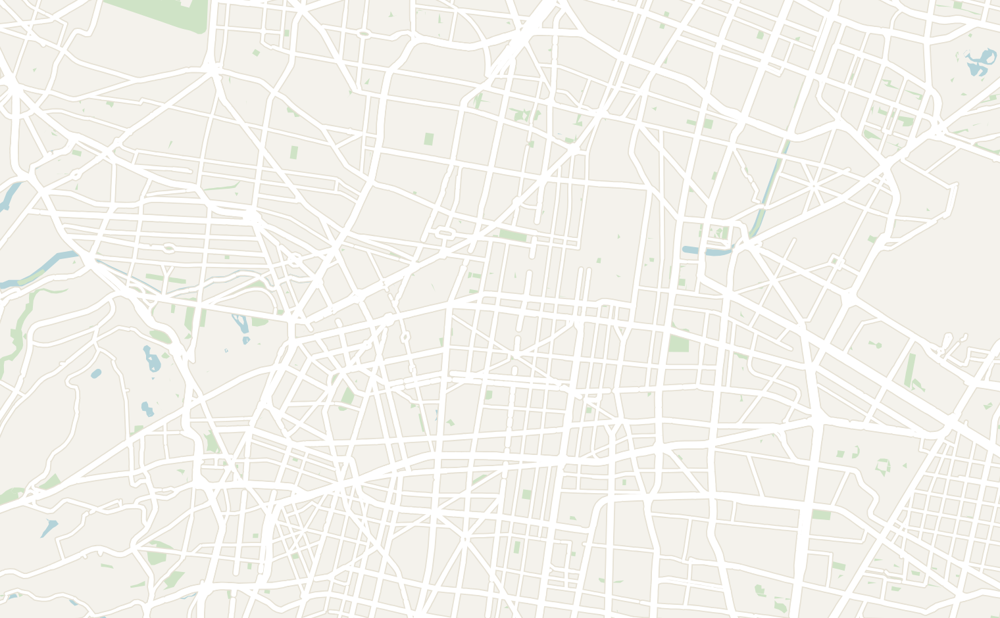
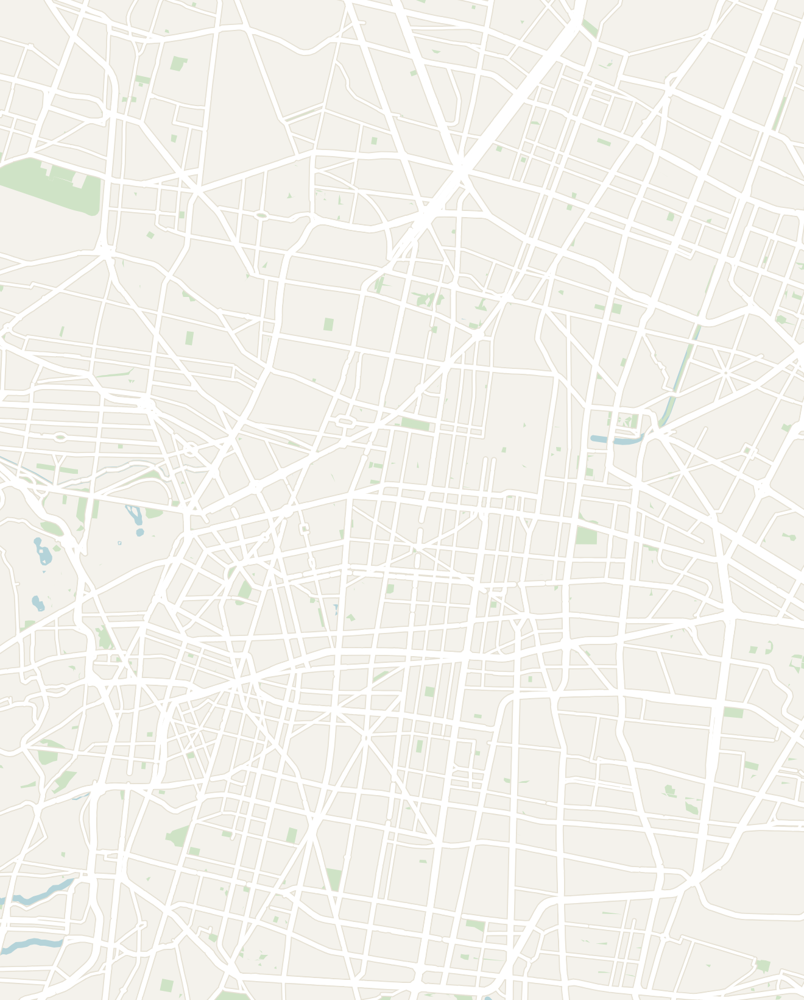
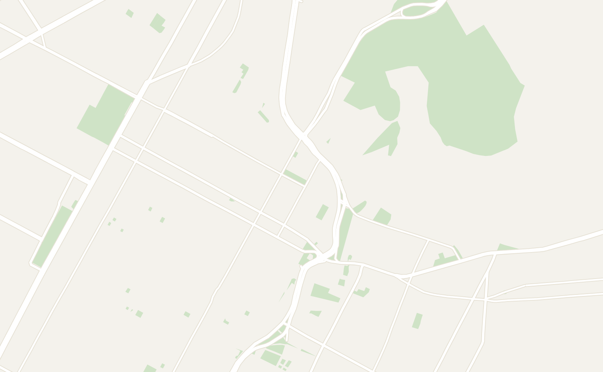
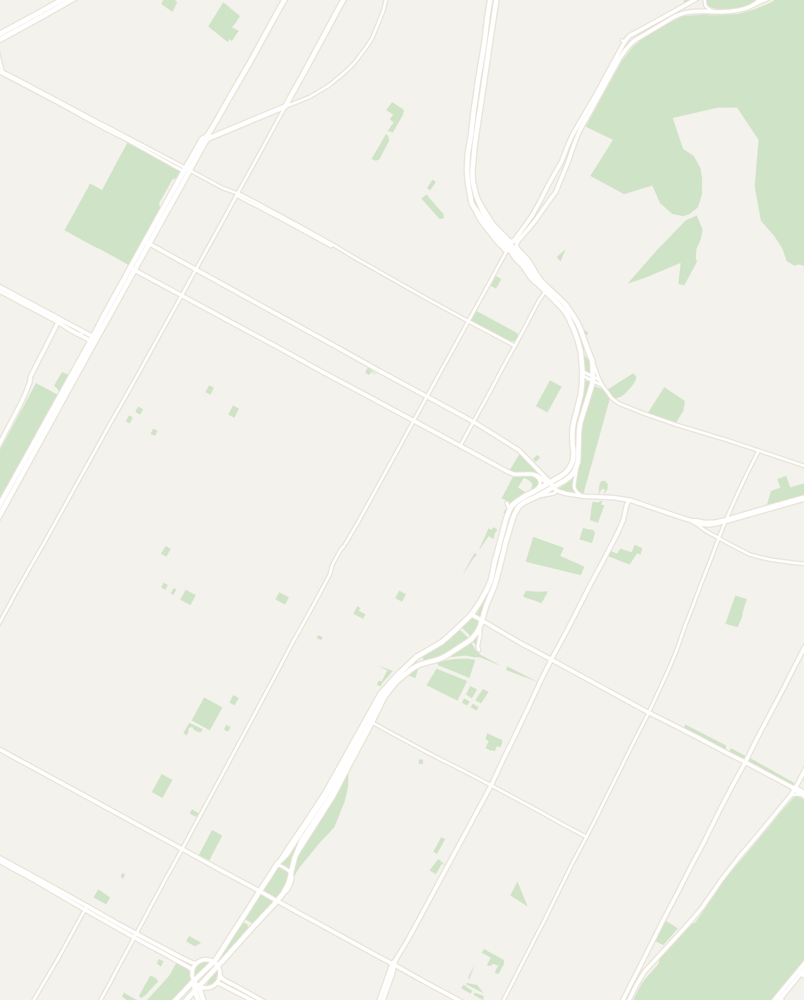
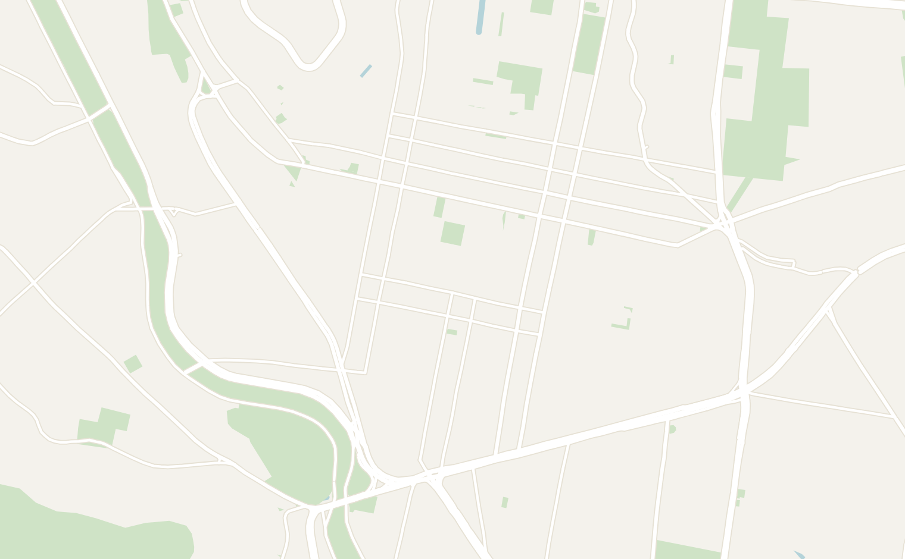
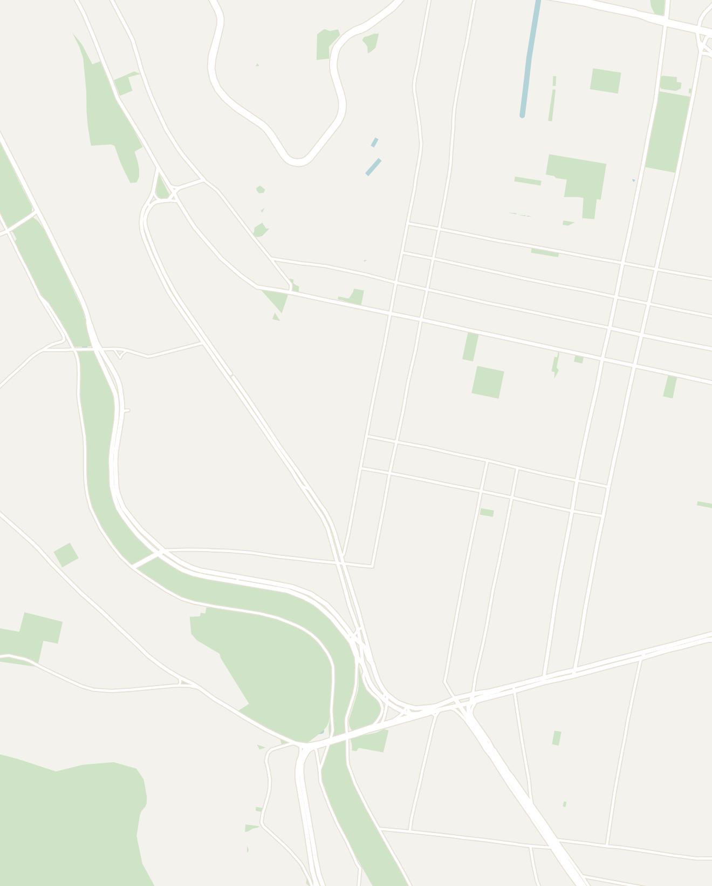
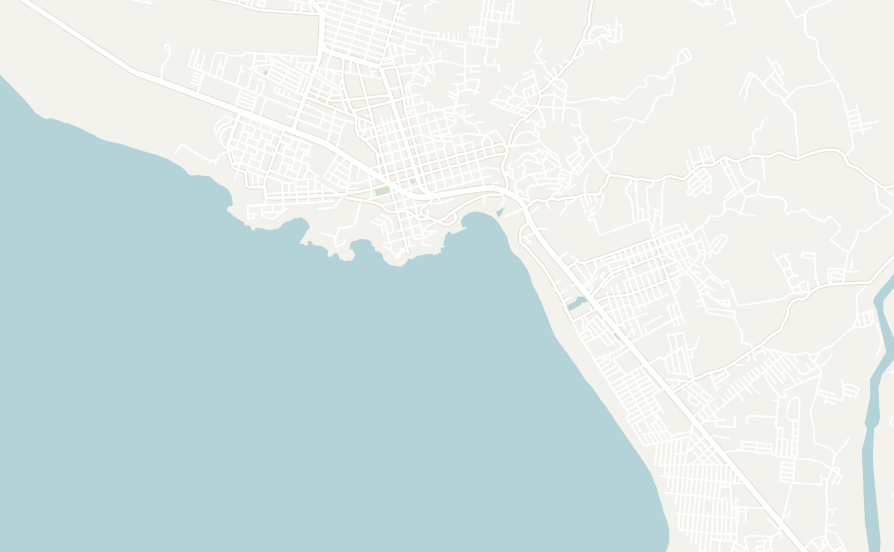
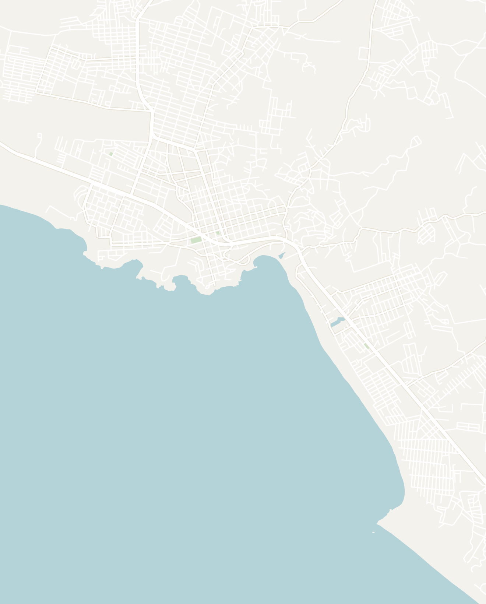

General
There is so much more to Mexico than the inside of an all-inclusive resort. I went to Mexico for the third time and finally felt like I was able to explore this amazing country. Mexico is home to gorgeous colonial cities, amazing cuisine, beautiful beaches and untapped historical sites. From what we see in the media, many people are too afraid to explore, but it is well worth it.
The food alone justifies the trip, but the mix of pre-Hispanic history, gorgeous colonial cities and a genuinely social backpacker scene is what makes it special. For my last trip, I spent about three weeks going through central Mexico from Mexico City → Puebla → Oaxaca → Puerto Escondido and am going to focus on these locations here.
- Getting around — Uber is everywhere in Mexico City and cheap, but the traffic can be absolutely brutal. Between cities, I took coach buses that are comfortable and affordable. I booked online with Busbud and the company ADO was very reliable. Local buses within towns are dirt cheap (~10 pesos) and a chaotic, very authentic ride
-
Safety — This is the biggest concern for most people going to Mexico outside of resort areas. Mexico definitely has security issues with the cartels. However, the unfortunate reality is that tourists are protected much more than locals. I felt perfectly safe in the tourist and backpacker areas that I visited, but was cautious and followed basic safety precautions
- The level of security varies greatly state by state so check the U.S. Travel Advisory for their specific state-based ratings. They normally eer on the conservative side, but this is a helpful resource for Mexico
-
Food — I don't think I was disappointed by a single meal in Mexico. Don't get me wrong, the street tacos were amazing, but there is so much more to Mexican food than we know about. Every region has its own specialty and it is worth branching out to try:
- Mexico City — the Al Pastor Tacos were amazing here and try Pulque (a creamy cactus based alcohol) and mezcal (a smoky Mexican spirit)
- Puebla — Cemitas (a sandwich with a crunchy bun and soft, tender meat inside), tacos árabes (a traditional fusion of Middle Eastern shawarma and Mexican tacos, actually the precursor to Al Pastor) and Chalupas (little fried tortillas with red and green sauce on top)
- Oaxaca — famous for its Mole (a rich, savory chocolate-based sauce), there were actually a ton of different dishes that I wasn't familiar with: Tlayudas (a large crunchy tortilla covered in black beans and a ton of different toppings), Memelas (little corn cakes topped with black beans and cheese) and the best mezcal in the world. I'd recommend going on a walking tour and your guide will show you all the local dishes
- Puerto Escondido — located along the Pacific Coast, this little seaside town was filled with fresh seafood. I had some unreal fish and shrimp tacos here
- Language — You'll have no trouble with just English in Mexico City. Once you get to smaller cities, a bit of Spanish goes a long way
- Money — Mexico was incredibly cheap. A full street-taco meal ran a few dollars, happy-hour beers were 15 pesos (~$0.75) and a long distance bus was about 100 pesos ($6 - $7). ATMs are easy to find in large cities, but carry cash for street vendors
- When to go — The best time to visit Mexico is during dry season from December to April. However, it is a huge country with diverse terrain so weather will vary greatly. It can feel like a completely different season in Mexico City vs on the Pacific Coast
Mexico City
4–5 days recommendedMexico City is the second largest city in the Americas and home to over 23 million people. The city, formerly known as Tenochtitlán, was built by the Aztecs on a lake with over 70 volcanoes surrounding it. Mexico City played an important role in the Spanish Conquest of the Americas and has continued expanding since. The city is enormous and it sprawls further than anywhere else that I've been. Mexico City is packed with things to do so spend at least 4–5 days here.
- Zócalo — the historic center of Mexico city, made up of a huge plaza facing the Mexico City Metropolitan Cathedral and the biggest flag I've ever seen flying overhead. Many historical sites and museums are based around here, but I wouldn't recommend it as a place to stay
- Roma Norte — the most popular neighborhood to stay. It is lined with classical European architecture, covered in trees and full of coffee shops, restaurants and bars. It is known to be very safe and a central location to visit sites around Mexico City
- La Condesa — located right next to Roma Norte, you'll find similar architecture. However, it is a bit quieter and cheaper than the more popular Roma neighborhood while still benefiting from the central location
- Polanco — an upscale neighborhood with more of the fancy hotels in Mexico City. It lies next to both Roma Norte and La Condesa
- Coyoacán — located further south from the other neighborhoods, Coyoacán is characterized by its bohemian architecture and home to the Frida Kahlo museum
- Teotihuacán Pyramids — as the former capital of the Aztec Empire before the Spanish Inquisition, Mexico City is home to some of the largest pyramids left from the Aztecs. The best way to visit is by sunrise hot air balloon tour. You'll float over the whole complex before anyone's there, surrounded by volcanoes and see the temples below in the early morning haze. The Pyramids are located an hour outside of Mexico City so it is an easy day trip
-
Bosque de Chapultepec — in the middle of Mexico city lies a huge oak forest park with small Aztec ruins and old fountains scattered through it. There are a few famous attractions inside of it including:
-
Anthropology Museum — one of the best Anthropology museums in Latin America. It is an enormous complex with thousands of Olmec, Aztec and Maya artifacts plus a room for each region of Mexico. It would take a whole day to see every single artifact so don't be afraid to skip rooms unless you're a huge anthropology fan
- Don't miss the Danza de los Voladores right outside of the museum! This is an ancient Mesoamerican ritual where 5 men dressed in traditional garb and climb a 100 foot pole and spin off the sides using just rope. They also play the drums and flute while sitting high up in the air
- Chapultepec Castle — a Spanish Colonial castle in the middle of Chapultepec park. The line can be brutal so line up early or book tickets in advance; I skipped it after seeing it wrap around the block
-
Anthropology Museum — one of the best Anthropology museums in Latin America. It is an enormous complex with thousands of Olmec, Aztec and Maya artifacts plus a room for each region of Mexico. It would take a whole day to see every single artifact so don't be afraid to skip rooms unless you're a huge anthropology fan
-
Palacio de Bellas Artes — a stunning Art Nouveau building with a white exterior and gold dome. It is the country's premier art museum and full of murals
- The Diego Rivera mural inside is the standout. There is a sorcerer figure in the center with communists and capitalists fighting for power on either side
- Floating Gardens of Xochimilco — ride a colorful trajinera boat through the ancient Aztec canals. There are two ways you can do it: a peaceful, sightseeing tour or party boat. I ended up on one of the party boats and it was a great time with open bar, a hype person, and mariachi bands randomly hopping onto our boat. It is a great way to spend an afternoon and expect to pay ~$50 for each option
- Lucha Libre — going to a Mexican masked wrestling is a fun experience even if you don't care about wrestling. I went on a guided tour with my hostel at Arena México where our guide handed out masks and taught us the chants. Be prepared for total chaos and some impressive acrobatics
- Mercado de la Merced — a huge local market near the Zócalo, packed with locals selling clothes, food and shoes. A very local non-touristy experience
- Frida Kahlo Museum (Casa Azul) — a popular visit for many who come to Mexico City. Tickets sell out 2 weeks in advance so make sure you book ahead of time
- Basilica of Our Lady of Guadalupe — located roughly 30 minutes away from the city center, this church is the most-visited Catholic site in the world after the Vatican
- Biblioteca Vasconcelos — one of the most beautiful, modern libraries in the world
- UNAM Campus — the National University of Mexico with beautiful murals and a botanical garden
- "Montezuma's Revenge" — a popular joke about tourists getting food poisoning when visiting Mexico. Watch out for street food if you have a sensitive stomach, but I didn't personally encounter any issues
- Street Tacos — having late night street tacos is a quintessential experience on your trip to Mexico and will even beat most sit-down spots
- Taquería Orinoco — a super famous taqueria in Roma Norte with a retro red-and-white theme (Dua Lipa even did a collab with them). Get the Super Taco which is the size of three regular tacos, served with a tray of six different salsas
- Tacos Tlaquepaque — a lowkey spot serving Al Pastor tacos near the Zócalo
- Máximo — a fancier fine-dining restaurant and one of the best in the city if you're looking for a nicer meal
- Mecate Club — a live music venue with a live band, small tables around a stage. I went on a Tuesday night and it was packed. Try Pulque here, a fermented cactus drink that tastes like alcoholic horchata
- Bar Las Brujas — a nice cocktail bar in Roma Norte with great mezcal cocktails
- Teclán Mezcalería — rated one of the top 20 bars in the world with a nice dimly lit vibe with a red glow. Personally, I didn't think the cocktails were mind blowing, but worth trying if there is no wait
- Wanderlust District — a hostel located on the edge of the upscale Roma Norte neighborhood. The facilities and roof were great. They also organized a lot of social activities including trip to a wrestling show


Double-tap to open in Google Maps
Puebla
2–3 days recommendedPuebla is the fourth largest city in Mexico and located just 2 hours away. It is popular among Mexican tourists, but has largely remained undiscovered by Western tourists unlike Mexico City. The city was gorgeous with cobblestone streets, bright-colored buildings and a beautifully maintained colonial old town. Puebla played an important role in Mexican history as the site of the famous Battle of Puebla on Cinco de Mayo, where Mexican forces defeated the French Army in 1862.
They are also famous for their regional dishes throughout Mexico so definitely worth trying. I would spend two days in Puebla combined with a quick day trip to the Pueblo Mágico of Cholula.
- Zócalo de Puebla — the gorgeous old town square in Puebla facing city hall and surrounded by local restaurants. Most historical sites are walking distance from here
- Free Walking Tour — the best way to cover the highlights: the neighborhoods, the historical murals, and context for why Puebla played such an important role in the Mexican Revolution
- Biblioteca Palafoxiana — located right in the town center, this is the oldest library in the Americas dating back to 1646. The library is a small room covered floor to ceiling in over 40,000 books and all labeled in Latin
- Pasaje Histórico 5 de Mayo — there are underground tunnels underneath the city of Puebla that were an important part of the Battle of Cinco de Mayo. They have been converted into a museum today and will drop you into a neighborhood full of murals named Xanenetla with a viewpoint over the city
- Loreto Fort Museum — located in Xanenetla neighborhood on the hill overlooking Puebla, Loreto Fort is a bright-orange fort used in the actual Battle of Cinco de Mayo. Explore the museum inside that covers the battle
- Museo Regional de la Revolución Mexicana — the original house where the Serdán brothers plotted the Mexican Revolution. It is still full of bullet holes in the walls from that time period. If you're lucky you might be able to catch a free, live performance here with traditional Mexican dances
- Ex-Convento de San Francisco — one of Puebla's most famous churches. Locals bring their newly bought cars here to be blessed, so there's usually a line of open hoods out front. Inside there's also a wax-covered mummy of a Spanish missionary
- Chapel of the Rosary, St. Dominic’s Temple — an avant-garde church covered in gold floral patterns
-
Pueblo Mágico of Cholula — one of the best things to do in Puebla is to take a day trip 40 minutes away to the town of Cholula. It has been given the special designation of "Pueblo Mágico" by the Mexican government meaning that it is one of the most important cultural heritage sites in the country
- Santuario de la Virgen de los Remedios — the main draw is a bright orange 16th-century Spanish church built on top of what is actually the largest pyramid in the world (its base is four times bigger than the Egyptian pyramids). There is an amazing view from the top and you can see an active volcano in the background of the church
- San Francisco Acatepec — the most intricate church exterior I saw in Mexico, covered in tile mosaics with baroque gold inside
- Bike Tour — I did a bike tour through the city and it was a fun, quick way to see the city. Your tour guide will explain all the stops. This only takes 3-4 hours so you'll still have the full day to explore. I booked it offline with Casa Pepe Hostel for only ~$20, but it is also available on Getyourguide
- Centro San Pedro Cholula — Cholula has a charming town square with restaurants, churches and live performances on the weekends
- Terraza Cholula — stop by this rooftop terrace cafe for a great view of the church in the distance
- Cemitas Americas — a lowkey restaurant serving some of the best Cemitas in Puebla (delicious pork sandwiches between crunchy pieces of bread). It is very popular among locals
- Comal — a fancy restaurant where you can sit facing the cathedral. The mole enchiladas plate came three enchiladas, each with a different sauce; the dark, chocolatey mole is the standout
- El Gran Zamora — Puebla invented a dish called Tacos Árabes: a flour tortilla loaded with Al Pastor. Meaning "Arab Tacos" they actually were influenced by Lebanese immigrants who came to Mexico and are the precursor to the more famous tacos Al Pastor
- Fonda Típica La Poblana — a traditional Mexican restaurant serving regional specialties, very affordable
- Chalupas from street vendors — all around the city you'll see street vendors frying little red and green tortillas with a bit of chicken. It is a popular snack for locals and worth trying once
- Casa Pepe Hostel Boutique Puebla — a hostel located in old town Puebla embedded in a historic 18th century house


Double-tap to open in Google Maps
Oaxaca
4 days recommendedOaxaca (pronounced woa-ha-ca) is one of my favorite cities in Mexico blending authentic Mexican culture, a unique local food culture, well preserved colonial architecture and a beautiful desert aesthetic. It also has the best mezcal in the world. It is considered by many to be the "Food Capital of Mexico" due to unparalleled variety of dishes and complex flavors.
For a first time visit, give it at least four days and your days will be packed with interesting activities.
- Food tour — the number one thing to do in Oaxaca is by far the food tour. You can do all the research you want, but there is nothing like a local guide to show you Oaxacan food. Over the course of the tour which typically lasts 2 hours, your guide will make sure you're stuffed: Memelas (tortilla with refried beans and tomatoes), cactus-and-beef tostadas, Jamaica juice, a steak torta and ice cream. I did it right when I arrived and it was the perfect primer on Oaxacan specialties
-
Templo de Santo Domingo de Guzmán — one of the main churches in Oaxaca. It actually took over 150 years to complete due to numerous earthquakes and the massive scale of the project. There are a few very interesting sites you can visit inside of the church:
- Jardín Botánico — attached to Templo de Santo Domingo, this is Oaxaca's famous botanical garden. You have to visit by tour and tours are only in Spanish. It has a striking desert aesthetic and the hallway of pipe cactuses reflected in the water at the end is the best part
- Museum of Cultures of Oaxaca — also in the same complex. A museum showcasing local Oaxacan culture. Some interesting exhibits include: machete-carved wood sculptures and a jade skull mask from Monte Albán
- Hierve el Agua — petrified "waterfalls" with turquoise pools at the top that look like infinity pools. You can swim to the edge and look over a valley of agave farms. Book a day tour from Oaxaca to avoid all the logistics of getting there
- Mezcal distillery tour — often paired with the Hierve el Agua tour, you can visit one of Oaxaca's many Mezcal distilleries. You see the full process: stone-wheel crushing, the underground smoke pit, barrel fermentation and then taste 20+ mezcals
- Monte Albán — Zapotec ruins on a hilltop outside the city. They are one of the many civilizations that existed at the same time as the Aztecs and Maya. Take the bus from town for only 100 pesos round trip. It is a huge complex of ruins with a ball court. They were alright, though not spectacular if you've already seen other ruins in Mexico. They are located only 20-30 minutes outside of central Oaxaca so it is a quick half day visit
- Mirador viewpoint — for sunset, head up to the mirador viewpoint where you can see the entirety of Oaxaca spread out across the valley and surrounded by mountains
- Mercado 20 de Noviembre — likely a stop on any food tour, this is the local market and a great place to order mole
- La Popular — a classic, affordable restaurant serving local Oaxacan Cuisine
- Roy's Tacos — a popular taco shop that is known for their Al Pastor tacos and pozole (a Mexican soup with chicken, potatoes and corn)
- Nono Cafe — a trendy coffee shop with great coffee, pastry and breakfast options
- Pan de Madre — a nice bakery for breakfast
- Casa Angel Hostel — a great hostel with a great rooftop and daily activities. It was super social and I met some amazing people here


Double-tap to open in Google Maps
Puerto Escondido
2–3 days recommendedPuerto Escondido is a small surfer town on the Pacific coast of Mexico that has just one main dirt road lined with shops and restaurants. I didn't expect to even go here, but ended up following some friends here and had a blast.
Puerto Escondido is a popular backpacker town and gets busy during peak season. The main beach is a popular surf spot, a great place to relax and watch the sunset. The main things to do in town are surf and party so plan your trip accordingly! I would recommend 2 to 3 days depending on your preferences.
-
La Punta Zicatela (the Main beach) — a popular surf spot and a great place to just relax. Most of the shops and restaurants are centered around here, making it the best area to stay in as well
- Punta Bar — located right on the sand, this beach bar was a fun place to spend the day and one of the best sunset spots in town
- Baby Sea Turtle Release — line up at sunset for about an hour, then release a baby turtle on the sand. They slowly crawl toward the ocean (led by the magnetic field). The gorgeous sunset combined with the baby turtle going into the ocean for the first time made for a genuinely magical experience
- Fish Shack — a small shack down a sandy alleyway that served some of the best fried fish tacos and shrimp tacos that I've ever had. A must if you're in Puerto Escondido
- Ola Taquería — right next to Fish Shack, a traditional Mexican restaurant with really cheap al pastor tacos
- Malagua Café — an upscale restaurant that served some amazing brunch food and smoothies
- The main strip where all the restaurants are has bars, but they all close at 11PM. The whole town takes taxis out to the clubs that are located on the outskirts of the city
- Some of my favorite spots were Xcaanda, Cactus and Mar & Wana
- Hostels book up quick during the peak season so try to book in advance
- Viajero Puerto Escondido — a part of the popular Viajero Puerto Escondido chain that I stayed at all over Latin America. This location is relatively basic, but has a pool
- If you're looking for a different vibe, there are many other small beach towns along the coast, each with their own personality: Mazunte (smaller and quieter) and Zipolite (hippy vibes & a nude beach).


Double-tap to open in Google Maps
Other Places to Consider
Here are the spots in Mexico that I'm excited to visit next time:
- Guanajuato & San Miguel de Allende — two of the prettiest colonial cities in the central highlands. Guanajuato is considered one of the most beautiful towns in Mexico with brightly painted houses, and San Miguel de Allende is a short hop away with cobblestone streets, a pink neo-Gothic church and a big expat and food scene
- San Cristóbal de las Casas (Chiapas) — a colonial town high in the misty Chiapas highlands. It's the base for Sumidero Canyon, the surrounding Indigenous villages, and the jungle-wrapped Palenque Ruins a few hours away. Many people I met heading that way loved it and it is a popular spot before continuing down to Guatemala
- Yucatán — one of the most popular vacation destinations in Mexico. Visit the city of Mérida or the smaller colonial town of Valladolid to reach Chichén Itzá and swim in the cenotes, then drop down to the Caribbean coast for Tulum's beaches and the turquoise lagoon at Bacalar